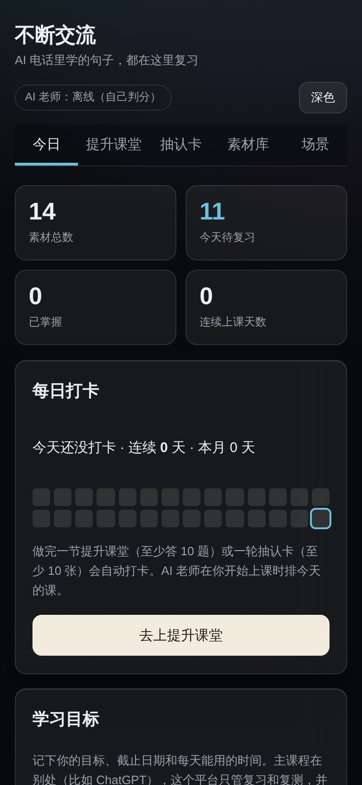
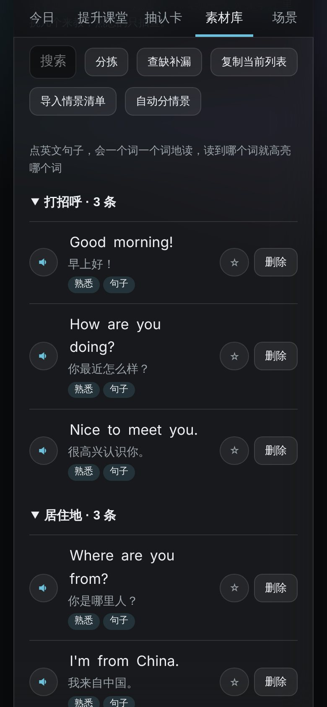
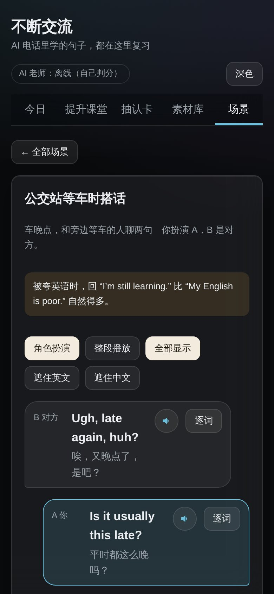
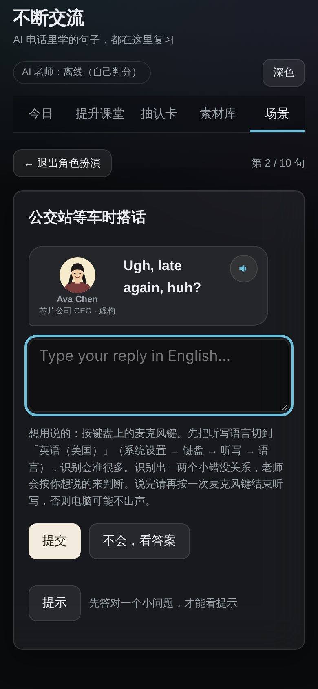
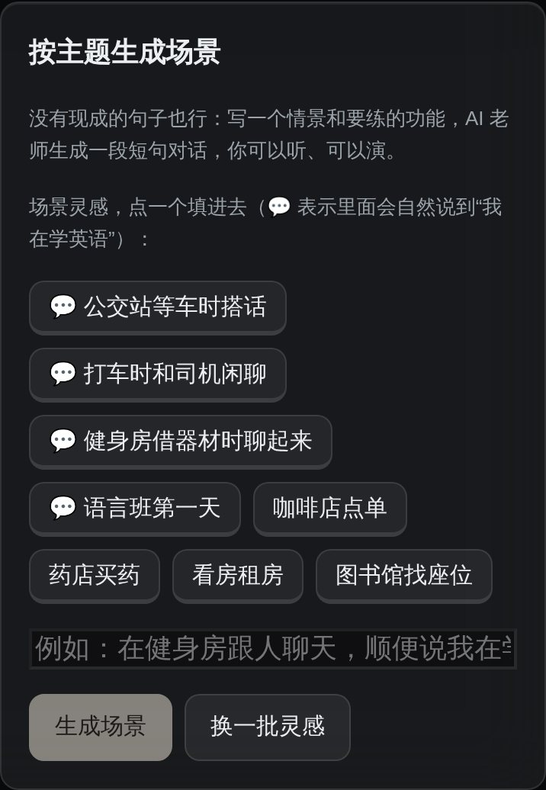
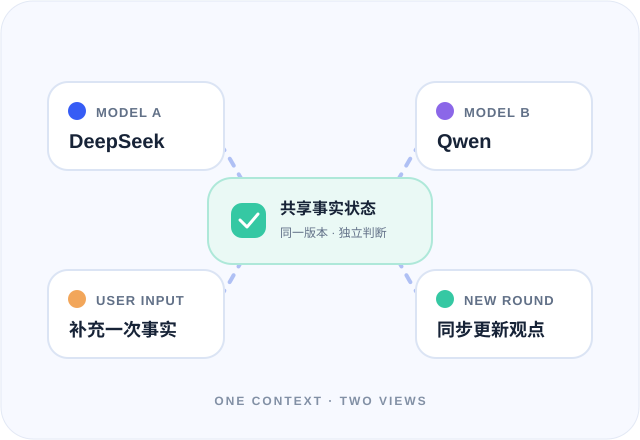

不断交流：英语学习 App
本地运行、每天自用需求设计AI 出题与批改
我英语基础弱，常用 AI 电话练口语。这个 App 把电话里学到的句子存起来，按熟练程度排期复习，再让 AI 老师把句子放进真实场景里练。

首页：待复习数量和每日打卡（做完至少 10 题才算打卡）

素材库：句子按情景分组、折叠，可自动分情景

场景：一段完整对话，可遮住英文或中文自测

角色扮演：对方是虚构人物。卡住时要先答对一个小问题才能看提示

场景灵感：30 个日常场景，避免 AI 总是生成咖啡厅
截图用的是示例数据，不是我的真实学习记录。
做到了什么
- 复习排程：新、学习中、已掌握三个阶段，到期的句子优先出现。
- AI 老师：从通话记录里挑句子，出题、批改、补全场景；角色扮演不设标准答案，只判断回复算不算正常交流。
- 本地运行，我每天自用。
- 场景库：30 个日常场景（问路、看医生、租房、公交站搭话等）的常用说法，生成场景时随机抽一个，并规定对话里要有肯定、拒绝和听不懂时的救场句。
没做到 / 不能证明
- 没有证明它比别的 App 更有效，只有我自己的使用感受。
- AI 批改的质量没有做过系统评测。
- 场景里有一部分常用说法是我整理时推断的，没有母语者审过。
- 这个 App 是本地运行的，没法放到公网上让大家直接用，所以这里只放截图。
UY 共享背景板：双模型讨论原型
原型，不是成品需求设计AI 测试DeepSeek + Qwen
我想验证的是：做项目决策时，让两个模型读同一份事实、各自判断，会不会比只问一个更有用。这个原型把它做成了流程：我只补充一次信息，两个模型读同一份最新的事实状态，各自更新判断，每一轮都保留下来方便回看。

为什么做
- 每换一个 AI，都要把项目情况和限制重新讲一遍。
- 补充或纠正信息后，旧结论还会继续影响后面的分析。
- 只看最新答案，看不出建议为什么变了，也没法回看之前的讨论。
我负责什么
- 定问题：多个模型能不能共享最新背景、持续协作。
- 设计共享事实状态和多轮讨论的验收场景。
- 用浏览器、接口日志和状态快照检查真实流程。
- 控制范围，先跑通双模型和历史保存。我定需求和验收场景、AI 实现、我测试和取舍。
关键取舍
- 从一个模型扮演多个角色，改成两个真实模型独立分析，互不读取本轮观点。
- 先关掉联网，集中验证共享背景和多轮流程。
- 把“接口返回成功”“事实状态正确”“回答可信”分开验收。
- 保留每个案例的历史，刷新后能恢复、能按轮次回看。
做到了什么
- 两个模型共享同一份事实状态，多轮更新。
- 待确认的问题有单独的生命周期整理。
- 流式输出、30 秒无响应自动中止、一侧失败不影响另一侧。
- 用真实模型跑通过一组两轮流程：在“5000 元开发 AI 工具”的案例里，第二轮补充演示范围、工时和付款条件后，事实状态更新到 v2，两个模型收到相同状态并各自更新建议，刷新后 v1、v2 都还能看。
没做到 / 不能证明
- 尚未证明双模型比单模型的决策质量更高。
- 真实测试里看到过 Qwen 把工时来源归错，还做过没有依据的市场比较，所以不能保证输出都可靠。
- 当前是演示模式：不联网搜索，也不生成来源引用，模型输出可能有未核实内容。
- 没有接入商家选品、商品或广告数据，没有多业务子 Agent 调度。
项目仓库还在整理，整理好后再放链接。
手势验证：先写标准，再看数据
验证中，未完成AI 测试评测手部关键点
目标是用摄像头区分握拳后是“放下”还是“甩出”，并且不在我正常用电脑时乱触发。这个项目现在做得最多的不是功能，而是怎么证明它不乱触发。
我怎么做验证
- 预注册：每条规则、通过标准、有效性条件，都在看新数据之前写进文档，并写明“不得因本轮结果修改参数”。
- 如实记录事后调整：有一次我看到数据暴露量太低，把有效性条件从“有手帧占比”改成“累计有手分钟数”。文档里写明这是看过数据之后改的，旧数据不计入。
- 盲测：用没参与定参数的新录制来检验，而不是用调参的那批。
目前能说的数字
- 放下 / 甩出两批独立测试：先锁定判定规则和通过线再采集，两批各 40 次。run16：放下误判 2/20，甩出命中 19/20；run17：放下误判 0/20，甩出命中 20/20。两批都达到我定的通过线。
- 有一条“时长门”规则：握拳持续 0.5 到 3.0 秒才输出。在已标注数据上，真的甩出动作保留了 83.5%（109 次里保留 91 次），其余被挡掉。
- 一段 44 分钟的基线录制里（我自述没有故意做手势），没加规则前触发约 20 次/小时；套上时长门后约 5.5 次/小时。这批数据当时不是盲测，只能当参考。
- 我定的通过线是“不做手势时，误触发不超过 2 次/小时”。最新一轮（11/8–11/9，合计 147 分钟）加时长门后误触发约 2.9 次/小时，没达到这条线，记为未达标，所以我不说它“能用”。
演示视频待补。测试数据目前在我自己的电脑上，没有放到公网。